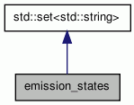

emission_states Class Reference
The class emission_states stores the list of states in the HMM that *may* be generating a given word given the two previous words (and their valid tags). More...
#include <hmm_tagger.h>
Inheritance diagram for emission_states:

Collaboration diagram for emission_states:

Detailed Description
The class emission_states stores the list of states in the HMM that *may* be generating a given word given the two previous words (and their valid tags).
The documentation for this class was generated from the following file: